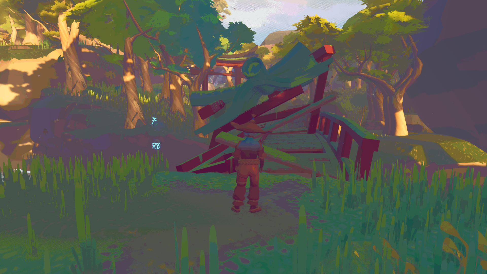
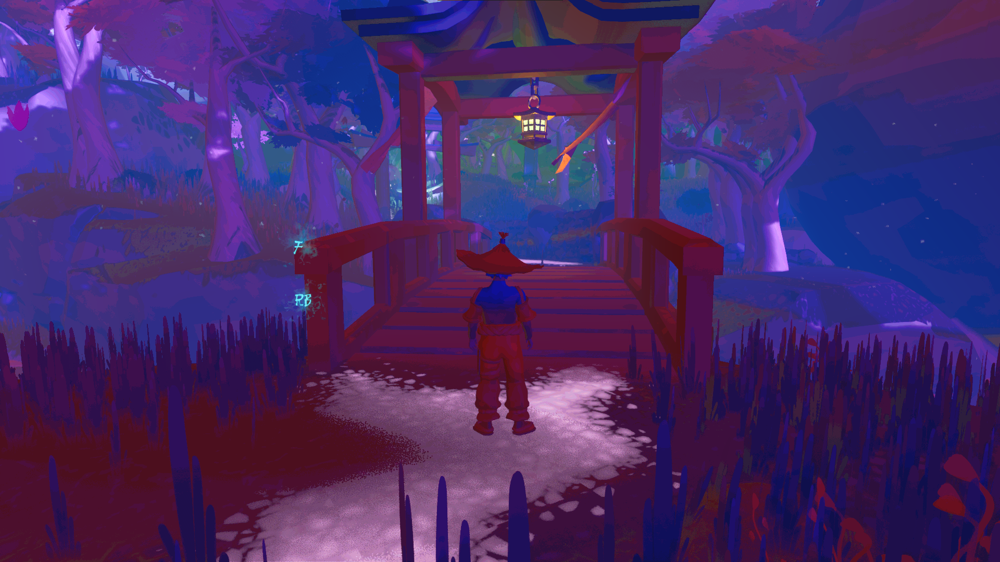
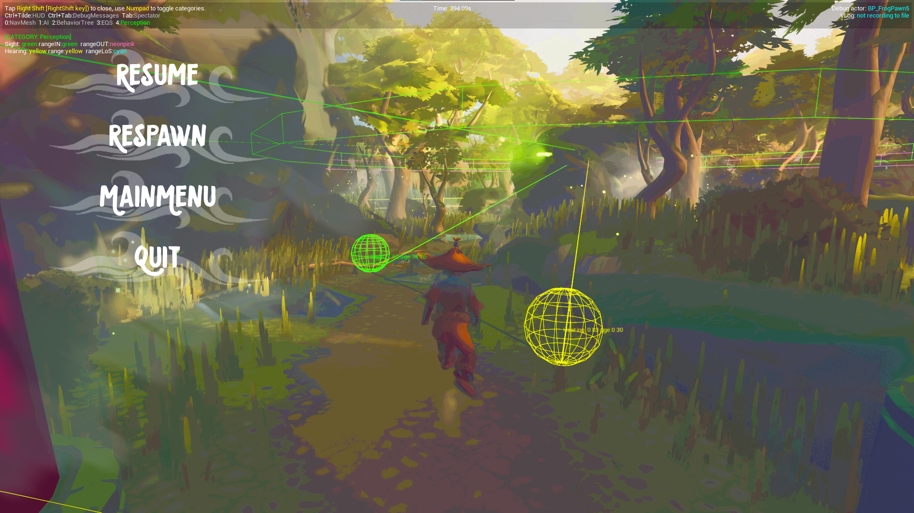
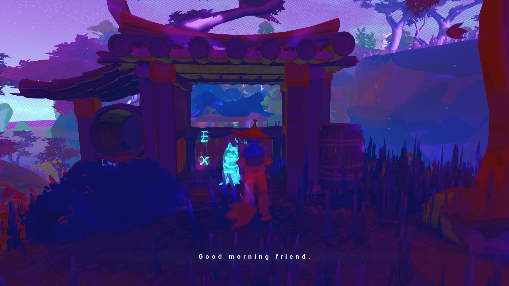

Isle Of Mizu
Trailer
Intro
The isle of Mizu is Third-person Story-driven game with puzzle mechanics. The game is inspired by Japanese culture and folklore. It is made in Unreal Engine 4. If you would like to check out the game for yourself please take a look at our Itch.io page.
Disclaimers: This was a group project so not everything you see is made by me. However as the only programmer all the code and was written by me in C++. And a lot of functionality that the artist used was created in C++ by me and exposed to them in the form of blueprint nodes.
The team consisted of:
- Alex Dekeyser (Artist)
- Ricardo Dias Teixeira(Artist)
- Hunor Vass Kacso(Artist)
- Willem Verheughe (Artist)
- Noach Vandekerckhove (Programmer)
Features/Mechanics
The Yokai world
The most important mechanic in our game is the abitlity to switch between the normal world and the Yokai world. The changes between worlds aren't only visual but instead have a signicant impact and this ability will be needed to solve the puzzle in the game.
 To cross the small stream you have to switch worlds.
The Frog Puzzle
The first real puzzle you will encounter in the game will be the Frog puzzle. To complete this puzzle you will have to traverse a maze like forest to reach the next puzzle. Ofcourse there are plenty of obstacles in the way to prevent you from reaching it safely. First off all most of the roads will be blocked sooner or later by fallen trees, structures, or other obstacles. To get past these you will need to either find a way around or check if the obstacles appears in the other world.

Some gameplay of the player getting caught.
The main difficulty for this puzzle lies within the frogs lurking around the forest. They can detect the player with both their sense of sight and smell(Using the Unreal Engine AI perception). As for the sight the faster you move the faster they will detect you so slowly making your way through the forest is advised. For the hearing however while walking slowly aslo helps reduce the noise your footsteps make the real danger is caused by all the branches lying around in the forest which when stepped on make a sound that will instantly wake any frog close to it.

Some gameplay showcasing both sneaking past the frog and the obstacles changing depending on the world .
Here you can see the AI perception at work. The green orb shows the last seen position and yellow the last heard position.
The Pillar Puzzle
Soon after you escaped the Frog puzzle you will find your way to the Pillar puzzle. To complete this puzzle you will have to traverse a river by platforming around moving pillars.
In the normal world the pillars move slight above and below the water line which makes timing your jumps important to avoid being swept away by the water and dying. In the Yokai world however, you can see
a strange fish like Yokai swimming through the pillars which makes them temporarily float up. Unfortunalty you can't jump on the pillars when you are in the Yokai world.
To solve this puzzle you have to carefully time when to activate Shrines scattered around the river. These shrines stop the movement of the pillars no matter what world they are in.
This way you can make the pillars float up in the Yokai world. Pause the Pillars using the shrines and then switch back to the normal world to try and jump across the platforms before they resmume moving.

Some gameplay of the player failing the platforming part of the puzzle.
The Pressure plate Puzzle
The main puzzle you will encounter in the Isle Of Mizu is a pressure plate puzzle. There are several pressure plates scattered around an ancient temple all of which have some sort of marking on them.
Around the temple you can also find several small statues that you can pick up and place upon the pressure plates to activate them. Activating some plates will cause the water to rise eventually filling the temple and killing the player.
While other plates seem to activate a stair mechanism.
To find out which are the right plates you will have to look around the temple. Some of the markings which can be found on the pressure plates can also be found in the temple if you are observant. You might need to check both worlds before you find all the markings.

Some gameplay of the player figuring out the pillar puzzle.
The Yokai
Outside of the 3 main puzzles there are some other Yokai scattered around the map. The first one you encounter is a Fox yokai that tells you the story as you progress through the game and also serves as a guide for the puzzles providing hints.
Here you can see the starting dialog of the game.
Most of the other yokai aren't as helpfull. Most just wander around aimlessly while a few patrol certain area's. But almost all of them will immediatly start to chase you when you get too close.

Here you can see the Yokai wandering about.

Here you can see the Yokai chasing the player when he got too close.
Other noteworthy features:
- Checkpoint system
- Saving/Loading via json file
- Primitve dialog system via CSV file
- Keyboard and mouse/Controller support
- Cutscene system both in game and pre rendered
- Collectible system
- Multiple AI behaviours some with AI perception
- Loading screen

Here you can see a collectible being picked up.